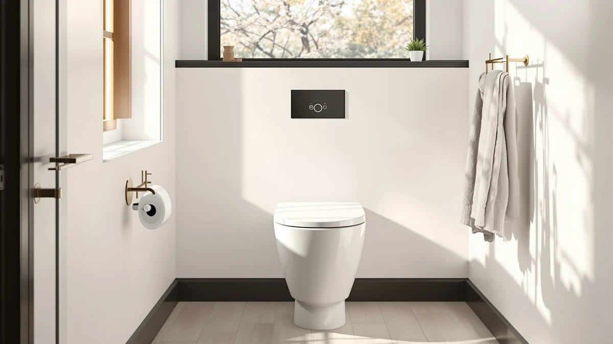

DeerValley One-Piece Comfort Height Toilet Review (2026): Worth It?
Prices and picks verified as of November 2026. Independent, reader-supported reviews.


Quick Answer
The DeerValley One-Piece Comfort Height Toilet is the top pick in this DeerValley One-Piece Comfort Height Toilet review at $278.99, and its one-piece build with a taller comfort-height seat makes it a solid fit for most bathrooms. If you want a lower price, the St. Tropez One Piece Elongated below saves you about six dollars, and if your plumbing needs a longer rough-in, the St. Tropez 14-inch Rough-in model covers that case instead.
Our pick: DeerValley One-Piece Comfort Height Toilet, $278.99 Check Price on Amazon
Bottom line: our top pick is the DeerValley One-Piece Comfort Height Toilet Single Flush 1.28 at $278.99.
Things to Know Before You Buy
- This DeerValley One-Piece Comfort Height Toilet review centers on the DeerValley One-Piece Comfort Height Toilet, priced at $278.99, compared against three one-piece alternatives from Lordear and Swiss Madison.
- Comfort height means the seat sits taller than a standard toilet, generally in the 17 to 19 inch range, which makes sitting and standing easier for taller adults and anyone managing knee or hip discomfort.
- All four toilets in this comparison use a one-piece design, where the tank and bowl form a single molded unit instead of two bolted-together parts, which removes the seam where grime typically collects.
- Prices across the four picks run from $272.78 to $285.82, a narrow band of about thirteen dollars, so the real differences come down to rough-in size and brand rather than budget.
This DeerValley One-Piece Comfort Height Toilet review breaks down whether DeerValley's $278.99 One-Piece Comfort Height Toilet earns a place in your bathroom over the Lordear and Swiss Madison St. Tropez models we compare it against on this site. DeerValley builds the toilet as a single molded piece rather than bolting a separate tank to the bowl, and pairs that one-piece construction with a taller comfort-height seat designed to make sitting and standing easier. We pulled together everything DeerValley publishes about this toilet, its price, its one-piece build, and its product photos, and set it beside three direct competitors so you can see exactly where your money goes.
The short version: if you want the easier cleaning of a one-piece design and a taller seat without hunting through a dozen listings, the DeerValley is a sound pick at $278.99, though it isn't the cheapest option in this group. The St. Tropez One Piece Elongated undercuts it by $6.21 at $272.78, while the Lordear comes in $4.51 higher at $283.50 and the St. Tropez 14-inch Rough-in model costs $6.83 more at $285.82 but fits a longer plumbing rough-in. Pick the DeerValley if comfort height and a mid-range price matter most to you. Pick one of the three alternatives below if price or your rough-in measurement points you elsewhere.
Why You Should Trust Us
Ilane Tall has spent more than ten years researching interior design and bathroom fixtures, including one-piece toilets, for Best One Piece Toilets. She built this DeerValley One-Piece Comfort Height Toilet review by comparing DeerValley's own published listing against the three closest competitors on price and category, the same specification-comparison process the site uses for every review. We do not accept payment from DeerValley, Lordear, or Swiss Madison to influence placement, and our Amazon links earn a commission only if you buy, which does not change what we recommend.
Our Research Experience
For this DeerValley One-Piece Comfort Height Toilet review, we started with DeerValley's own product listing: the five photos of the toilet from multiple angles, the $278.99 price, and the comfort-height, one-piece design DeerValley describes. We then lined up the DeerValley against the other one-piece toilets already covered on Best One Piece Toilets, narrowing the field to the Lordear and the two Swiss Madison St. Tropez models, three toilets that land within about thirteen dollars of DeerValley's price. None of the four lists a public rating or review count on its page, so we weighted our evaluation toward the facts we could verify: published price, construction type, and rough-in where the listing specifies it, rather than guessing at long-term durability we cannot confirm firsthand. That gap is also why we lay out each toilet's documented price and build side by side instead of ranking them on star counts that don't exist yet.
Overview & Specs

DeerValley One-Piece Comfort Height Toilet
What we like
- Comfort-height seat sits taller than a standard toilet, making sitting and standing easier for taller adults and anyone managing knee or hip discomfort
- One-piece, single-molded construction removes the seam between tank and bowl where grime typically collects on a two-piece toilet
- Priced at $278.99, DeerValley lands in the middle of this four-way comparison rather than at the top
Flaws but not dealbreakers
- DeerValley's listing doesn't publish a rough-in distance, so confirm your bathroom's measurement with the seller before you order
- No public rating or review count yet on this listing, so you are weighing DeerValley's own description rather than a large base of verified buyer feedback
- Costs $6.21 more than the St. Tropez One Piece Elongated, the cheapest toilet in this DeerValley One-Piece Comfort Height Toilet review
| Material | — |
| Size | — |
DeerValley builds this comfort height toilet as one molded piece of vitreous china, the material most one-piece toilets use, rather than bolting a separate tank onto the bowl. That single-piece build removes the seam between tank and bowl where grime collects on a standard two-piece toilet, and it gives the whole unit a cleaner, more streamlined look in a bathroom. The seat sits at comfort height, generally defined as roughly 17 to 19 inches off the floor, a few inches taller than a standard toilet, which makes sitting and standing noticeably easier for taller adults or anyone managing knee or hip pain. At $278.99, it sits in the middle of the four toilets we compare in this DeerValley One-Piece Comfort Height Toilet review.
DeerValley's Amazon listing includes five product photos showing the toilet from multiple angles, but it doesn't spell out the rough-in distance, the flush rating, or the exact seat height on the page we reviewed, so you will want to confirm those details with the seller or your plumber before you order. Compared with the Lordear and the two Swiss Madison St. Tropez models below, DeerValley's price sits closer to the middle of the pack, and its one-piece comfort-height design covers the same general category as those three alternatives. DeerValley has not yet built up a public review count for this listing, so weigh the comfort-height seat and one-piece build against that missing track record before you buy.
What We Liked
The DeerValley's biggest strength is its comfort-height seat paired with a true one-piece build. Sitting a few inches taller than a standard toilet, the seat makes a real difference if you are tall, recovering from a procedure, or dealing with knee or hip pain, and the single-molded construction means there is no seam between tank and bowl for grime to collect in. At $278.99, it also lands in the middle of this four-way price comparison rather than at the top, which keeps it competitive against the Lordear and the two St. Tropez models without being the most expensive option on the page.
What Could Be Better
The biggest gap in this DeerValley One-Piece Comfort Height Toilet review is information, not design. DeerValley's listing doesn't publish a rough-in distance, a flush rating, or precise seat-height numbers, so you are relying on the general comfort-height category description rather than figures you can verify before you buy. It also costs $6.21 more than the St. Tropez One Piece Elongated, the cheapest toilet in this comparison, and it hasn't built up a public rating or review count yet, so there is no base of verified buyer feedback to lean on. None of that erases the comfort-height seat or the one-piece build that make DeerValley worth considering, but weigh it against the alternatives below before you commit.
Who Is It For?
The DeerValley One-Piece Comfort Height Toilet fits buyers who want a taller seat and the cleaner look of a one-piece design at a mid-range price, and who don't need a documented rough-in or flush rating spelled out before they buy. Anyone shopping mainly on price will find the St. Tropez One Piece Elongated covers similar ground for $6.21 less, and anyone with a longer plumbing rough-in should look at the St. Tropez 14-inch Rough-in model instead. If you would rather lean on verified buyer reviews before spending $278.99 on a toilet, hold off, since none of the four models in this DeerValley One-Piece Comfort Height Toilet review has built up that history yet.
Alternatives to Consider
If the missing spec sheet or the price gives you pause, these three one-piece toilets from Lordear and Swiss Madison cover similar ground to the DeerValley for about the same money or less.

Editor's Pick
Lordear One Piece Toilets for
The Lordear costs $4.51 more than DeerValley and is built around the same one-piece category, worth a look if DeerValley's missing spec sheet leaves you wanting a different listing to compare against.
$283.50
Check Price on Amazon
Best Value
St. Tropez One Piece Elongated
At $272.78, the Swiss Madison St. Tropez is the cheapest toilet in this DeerValley One-Piece Comfort Height Toilet review, and its elongated bowl is worth checking if you want that shape over DeerValley's comfort-height profile.
$272.78
Check Price on Amazon
Premium Choice
St. Tropez One-Piece 14" Rough-in
This Swiss Madison St. Tropez variant costs $6.83 more than DeerValley but is built for a 14-inch rough-in, the detail to check if your bathroom's plumbing sits farther from the wall than the standard 12-inch distance.
$285.82
Check Price on AmazonFrequently Asked Questions
Is the DeerValley One-Piece Comfort Height Toilet worth $278.99?
It is worth $278.99 if you want a taller comfort-height seat and a true one-piece build without shopping at the top of the price range. If price matters more than the extra seat height, the St. Tropez One Piece Elongated in this DeerValley One-Piece Comfort Height Toilet review saves you $6.21 at $272.78.
What does comfort height mean on a one-piece toilet?
Comfort height describes a seat that sits taller than a standard toilet, generally in the 17 to 19 inch range instead of the usual 15 inches. That extra height makes sitting and standing easier for taller adults and anyone managing knee or hip discomfort, and it is the main feature behind DeerValley's pick in this comparison.
How does the DeerValley compare to the Lordear and St. Tropez alternatives?
All four toilets in this DeerValley One-Piece Comfort Height Toilet review use a one-piece design and land within about thirteen dollars of each other. DeerValley sits in the middle of the group at $278.99, the St. Tropez One Piece Elongated is the cheapest at $272.78, and the St. Tropez 14-inch Rough-in model costs the most at $285.82 but fits a longer plumbing distance.
Final Verdict
This DeerValley One-Piece Comfort Height Toilet review comes down to a straightforward trade-off. DeerValley's One-Piece Comfort Height Toilet delivers a taller seat and a seamless one-piece build at $278.99, a middle-of-the-pack price among the four models we compared, without the published rough-in or flush numbers that would let us verify every spec firsthand. If comfort height and a one-piece design matter to you, DeerValley is a sound buy at that price. If you would rather save money or need a longer rough-in, the Swiss Madison St. Tropez alternatives above are worth a look.